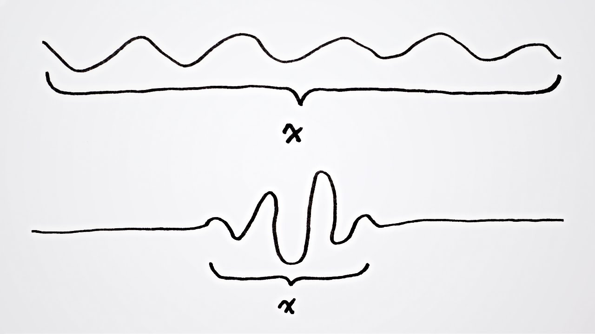
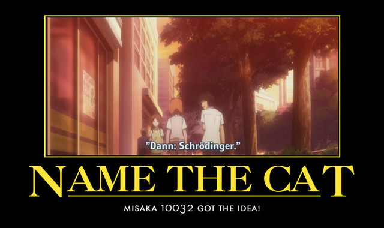
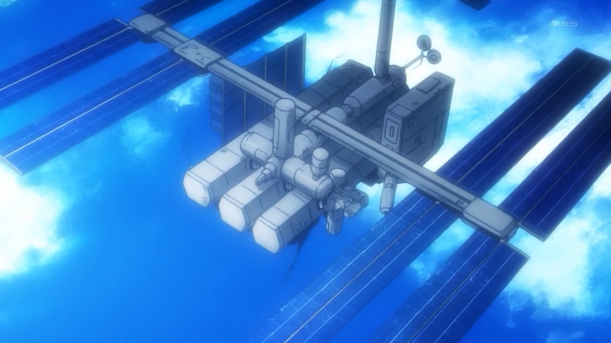
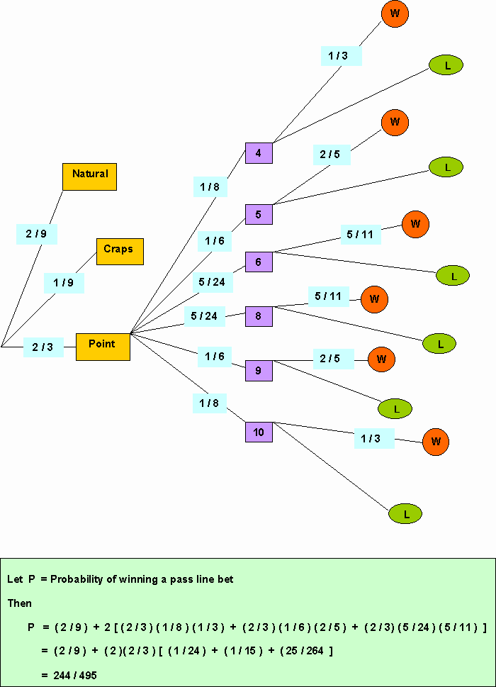
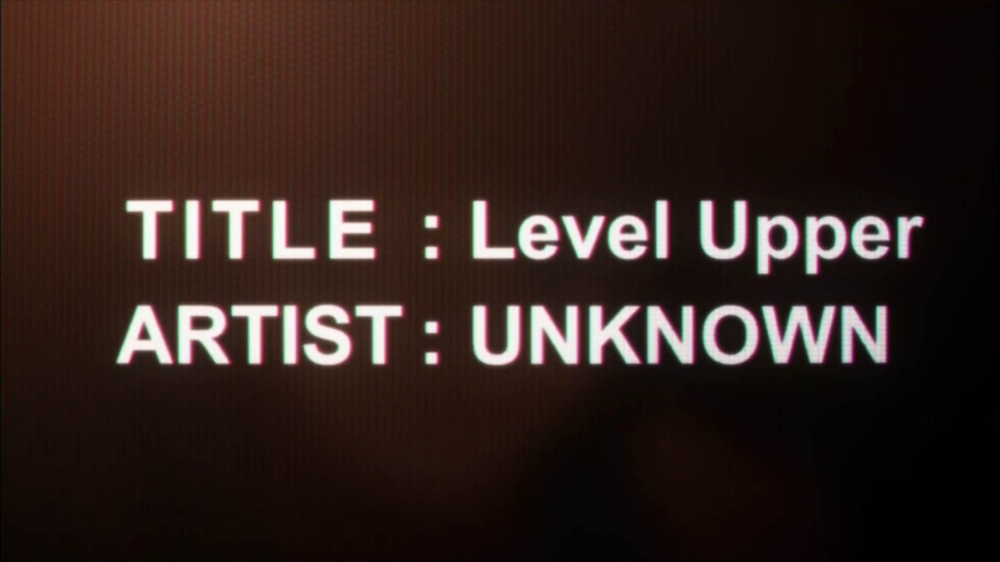

Baru-baru ini, portal pemandai masyarakat The Patriots Asia ada menerbitkan satu artikel yang membincangkan idea-idea saintifik dalam siri animasi Steins;Gate lalu teringat pula saya kepada siri animasi cereka sains kegemaran saya yang lagi satu: A Certain Scientific Railgun. Saya sangat menggalakkan menonton kedua-dua siri ini walaupun siri Railgun tersangatlah ringan berbanding Steins;Gate dari segi plot.
Mereka yang suka Railgun mungkin tidak suka Steins;Gate dan juga sebaliknya. Namun, saya sangat suka kedua-duanya! Hehe.
A Certain Scientific Railgun
Siri animasi ini adalah kisah sampingan [side-story] kepada novel ringan dan animasi A Certain Magical Index. Tarikan utama siri ini adalah pelajar-pelajar dalam Bandar Akademi ini mempunyai kebolehan luar biasa (dikenali sebagai esper) seperti Mikoto Misaka mengawal elektrik dan Kuroko Shirai dengan kuasa teleportation. Lebih menarik apabila penulis Kazuma Kamachi cuba untuk mengaitkan dunia ini dengan banyak fenomena sains lalu menambah beberapa rencah fenomena rekaan (fiction)!
Personal Reality
Konsep “Personal Reality (rekaan)” adalah asas kepada kejadian esper dalam dunia ini dan ia dikaitkan dengan dua fenomena kuantum yang popular: 1) Prinsip Ketaktentuan Heisenberg dan 2) Kucing Schrödinger.

Gambaran Prinsip Ketaktentuan Heisenberg – Ihsan MinutePhysics
Prinsip Ketaktentuan Heisenberg mengatakan bahawa kita tidak boleh tahu kedudukan dan halaju sesuatu zarah dengan tepat dalam masa yang sama. Lagi tepat data kita tentang halaju, kurang tepatnya data kita tentang kedudukannya; dan begitulah sebaliknya.
Analoginya:
- “Kita yakin sifulan tu ada di Klang, tapi dia mungkin sedang bergerak dalam lingkungan 10 ~ 500 km sejam.”
- “Sifulan sedang bergerak dalam 50 ~ 55 km sejam, tapi mana kita nak cari dia di seluruh Selangor ni?”
Konsep Kucing Schrödinger pula berasaskan sifat zarah yang boleh berada dalam dua keadaan dalam masa yang sama. Kita letak seekor kucing dalam sebuah kotak beserta alatan yang boleh membunuhnya tapi alat itu bergantung kepada keadaan zarah tersebut; A atau B. Namun, kalau zarah itu boleh menjadi A dan B dalam masa yang sama, adakah kucing tersebut terbunuh ataupun tidak?
Jawapannya, dua-dua sekali selagi mana kotak tidak terbuka. Bak kata pepatah Bahasa Inggeris: Curiosity killed the cat! Kucing tu mati sejurus selepas kita membuka kotak itu untuk tahu.
Tafsiran yang popular untuk menjelaskan fenomena zarah ini ialah Tafsiran Copenhagen yang mengatakan zarah akan berada dalam semua keadaan yang mungkin sehinggalah kita mengukurnya. (Baca juga tafsiran-tafsiran lain yang ditulis oleh Fiziklah.)
(Nota kaki: Kucing Schrodinger hanyalah satu experimen bayangan [thought experiment] maknanya tiada kucing yang dibunuh dalam pembikinan Mekanik Kuantum ini)
Personal Reality pula mem-bakulsampah-kan (dengan cara yang baik) prinsip Heisenberg dan memanfaatkan Kucing Schrödinger untuk menjadikan seseorang itu esper. Maknanya, seorang esper tahu setiap data sesuatu zarah dan boleh memaksa sebuah (atau sekumpulan) zarah mengubah kebarangkaliannya supaya kucing itu boleh hidup atau boleh terhasilnya elektrik atau macam-macam fenomena yang lain untuk berlaku. Namun, mustahillah bagi kita untuk mencapainya (huhu T^T).

MISAKA 10032 menamakan kucingnya Schrödinger. Sangat saintifik!
Tree Diagram

Satelit Orihime yang dihuni Tree Diagram
Tree Diagram adalah super-komputer paling hebat di dunia Raildex (Railgun + Index). Ia terletak dalam satelit Orihime untuk meramal cuaca dengan sebegitu tepat setiap bulan; itulah gambaran kehebatannya. Selain itu saintis juga menggunakannya untuk membuat analisis beberapa keadaan, memberikan kemungkinan-kemungkinan yang boleh jadi, dan menunjukkan penyelesaian terbaik secara matematiknya.
Yang menariknya tentang komputer ini ialah Tree Diagram bukanlah nama komputer semata-mata, ia merujuk kepada rajah paling popular dalam Kebarangkalian dan Teori Permainan. Ya! Itulah Rajah Pokok! Rajah pokok ini sangat berguna untuk mengira kebarangkalian rentetan kejadian.

Synaesthesia
Synaesthesia adalah keadaan apabila sesuatu rangsangan itu menimbulkan rangsangan yang lain; macam kita boleh nampak setiap huruf mempunyai warna tertentu, atau mendengar kerdipan cahaya, ataupun nampak kalendar dengan jelas bila memikirkan tentang hari. Namun, hal ini tak berlaku kat semua orang, hanya orang-orang tertentu sahaja yang merasainya.

Level Upper ialah sebuah lagu yang dikatakan boleh membuatkan bukan-esper menjadi esper
A Certain Scientific Railgun silap dalam hal ini kerana menganggap Synaesthesia berlaku kepada semua orang. Perkara ini lebih ketara apabila ia digunakan supaya Level Upper boleh berfungsi.
Ingat ya rakan-rakan! Synaesthasia adalah penyakit genetik.
Penutup
Ada lagi konsep-konsep menarik yang penulis Kazuma Kamachi selitkan sepanjang cerita ini. Nama “Railgun” itu sendiri merujuk kepada senjata berteraskan elektrik tapi itu boleh dibawa kepada hari yang lain.
Hal ini juga membuktikan bahawa sains boleh menjadi perencah dalam cerita rekaan.